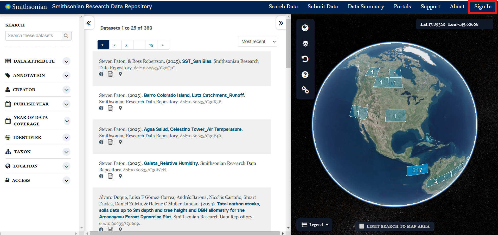

# Register to Submit Data

This page provides instructions for requesting approval to publish data on the Smithsonian Tropical Research Data Repository as a Smithsonian Tropical Research Institute data contributor.

Quick Link: [Smithsonian Tropical Research Data Portal New Data Contributor Registration Form](https://forms.office.com/r/pqztz1EZbE)

Our data repository uses ORCID (Open Researcher and Contributor ID) to create accounts. **You must login to the Smithsonian Research Data Repository with an ORCID before you submit a data contributor request.** The full process is outlined below.

## Create an ORCID (Open Research and Contributor ID)

**If you already have an ORCID, please skip to step 2.**

Certain ORCID setting are required to contribute data to the Smithsonian Tropical Research Data Repository. Fill out the necessary settings marked below with an * in addition to the fields required by ORCID.

1. Go to the ORCID registration page to sign up: <https://orcid.org/register> (Figure 1)

2. Enter a Family Name or Surname *

3. Set your default visibility settings* to specify who can view your ORCID Record (Figure 2). You must either select:
   - Everyone, or
   - Trusted Parties

Finish the remaining creation steps.

### Optional -- Link Institutional Account

After you create an ORCID, you have the option to access your account through your institution. Linking to an institution will allow you to conveniently login with your institutional account credentials.

<div style="display: flex; align-items: flex-start; justify-content: space-between;">
  <figure style="margin-right: 10px; text-align: center; width: 33%;">
    
    <figcaption>Figure 1: ORCID Registration Form, Step 1- Names and Emails</figcaption>
  </figure>

  <figure style="margin-right: 10px; text-align: center; width: 33%;">
    
    <figcaption>Figure 2: ORCID Registration Form, Step 4 - Visibility</figcaption>
  </figure>

  <figure style="text-align: center; width: 33%;">
    
    <figcaption>Figure 3: Search for your organization name using the dropdown.</figcaption>
  </figure>
</div>

## Create a Smithsonian Account using ORCID

Starting an account with Smithsonian Research Data Repository is easy!

1. Go to <https://smithsonian.dataone.org/data> and click on "Sign In" in the top-right corner (Figure 4)

2. You'll be directed to a sign in window (Figure 5). Use your ORCID credentials to sign into the data repository

3. A permission pop-up from ORCID will appear. Select Authorize access* (Figure 6). This will update your list of trusted organizations and allow the Smithsonian Research Data Repository to view your ORCID Record

Your Smithsonian Research Data Repository account will automatically be created.

<div style="display: flex; align-items: flex-start; justify-content: space-between;">
  <figure style="margin-right: 10px; text-align: center; width: 33%;">
    
    <figcaption>Figure 4: STRP Main Data Search page</figcaption>
  </figure>

  <figure style="margin-right: 10px; text-align: center; width: 33%;">
    
    <figcaption>Figure 5: ORCID sign-in screen</figcaption>
  </figure>

  <figure style="text-align: center; width: 33%;">
    
    <figcaption>Figure 6: Authorize access to trust this trusted organization</figcaption>
  </figure>
</div>

## Make sure Smithsonian Institution Research Data Repository is a Trusted Party

**Skip this step if your ORCID visibility settings are set to "Everyone"**

**If you selected "Trusted Parties,** you will need to add "DataONE" and DataONE Identity Portal to your list of trusted organizations.

1. Go to <https://orcid.org/> and sign in

2. Click on your name on the top right-hand corner of the page and navigate to "Trusted Parties" (Figure 7)

3. Make sure that "**DataONE**" and "**DataONE Identity Portal**" are listed as trusted organizations (Figure 8)

Alternatively, you can change your visibility settings to "Everyone" from your ORCID account settings at anytime (Figure 9).

<div style="display: flex; align-items: flex-start; justify-content: space-between;">
  <figure style="margin-right: 10px; text-align: center; width: 33%;">
    
    <figcaption>Figure 7: Trusted Parties settings can be found under your name</figcaption>
  </figure>

  <figure style="margin-right: 10px; text-align: center; width: 33%;">
    
    <figcaption>Figure 8: If you have limited visibility access to your ORCID, you must have these trusted organizations</figcaption>
  </figure>

  <figure style="text-align: center; width: 33%;">
    
    <figcaption>Figure 9: Change your visibility settings at any time</figcaption>
  </figure>
</div>

## Request Access to Submit Data

**After you have created your account with the Smithsonian Data Research Repository, you can send in a request to submit data.**

[Fill out the Smithsonian Tropical Research Data Repository new data contributor form to send your request](https://forms.office.com/r/pqztz1EZbE). (Figure 10) A repository admin will review your information and contact you at the email provided in the form.

<div style="display: flex; flex-direction: column; align-items: center;">
  <figure style="margin-bottom: 20px; text-align: center;">
    
    <figcaption>Figure 10: Preview of the STRP data contributor registration form</figcaption>
  </figure>
</div>

## Wait for the Smithsonian Tropical Research Data Repository to Respond

Your request will be processed by the Smithsonian Tropical Research Data Repository team. Please allow an appropriate amount of time for this to occur.